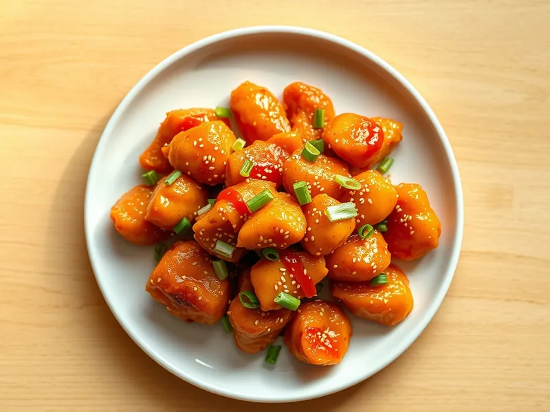

Курица в апельсиновом соусе по-китайски
Хрустящие кусочки курицы в крахмале под блестящей апельсиново-соевой глазурью
25 мин3 порц.417 ккал на порциюБ 41 · Ж 17 · У 25Азиатская кухня
Открыть в приложении: порции, таймеры, список покупок
Продукты на 3 порц.
- Куриное филе500 г
- Крахмал2 ст. л.
- Апельсин1 шт
- Соевый соус2 ст. л.
- Мёд1 ст. л.
- Чеснок2 зуб.
- Имбирь10 г
- Растительное масло4 ст. л.
- Соль1 щеп.
- Кунжут по желанию1 ч. л.
- Зелёный лук по желаниюпо вкусу
Как готовить
- Нарежьте филе кубиками 2-3 см, посолите и обваляйте в 2 ст. л. крахмала, оставив 1 ч. л. для соуса.
- Разогрейте масло на сильном огне и обжарьте курицу в два захода по 5-6 минут до золотистой хрустящей корочки. Выложите на бумажное полотенце.
- Снимите с апельсина тёркой немного цедры и выжмите сок. Смешайте сок, цедру, соевый соус, мёд, натёртые чеснок и имбирь и оставшийся крахмал с 2 ст. л. воды.
- Слейте лишнее масло из сковороды, влейте соус и варите на среднем огне 2 минуты, помешивая, пока он не загустеет и не станет блестящим.
- Выложите курицу в соус, перемешайте 1 минуту, чтобы каждый кусочек покрылся глазурью. Посыпьте кунжутом и зелёным луком.
Совет. Соединяйте курицу с соусом прямо перед подачей: если она постоит в глазури, корочка размокнет.